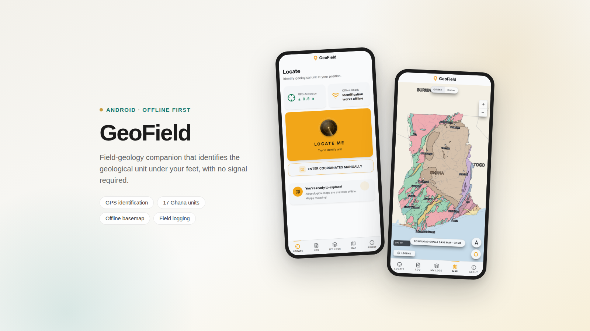

Geological Engineer
Edwin
Founder, Eon Designs
Gyasi
Owusu
Kumasi, Ghana
Geological Engineer
Edwin
Founder, Eon Designs
Gyasi
Owusu
Kumasi, Ghana
Using geology, data, and AI to shape the future of engineering.
A geological engineer who thinks in systems.
disciplines
case studies
internships
tools in practice
I'm a geological engineer with a strong pull toward mining operations and the systems that make them work. I don't just look at geology. I think about how field data connects to decisions, how processes can run better, and where the gaps are between site operations and engineering insight.
My work spans geotechnical engineering, exploration geophysics and geochemistry, hydrogeology, and engineering geological investigations: the practical side of getting useful answers out of difficult sites.
I sharpen my edge at the intersection of technical geology and data analytics, using Python, SQL, and Power BI to turn raw site data into something actionable. I think in systems and workflows, not just tasks.
Selected engineering work.
Case studies across geospatial software, geostatistics, and geotechnical site characterization.

GeoField — Offline Field Geology Companion
An offline-first Android app that identifies the geological unit under your feet from GPS alone, covering all 17 mapped units of Ghana, with a 92 MB offline basemap and structured field logging for photos, voice and notes.

Spatial Distribution of Trace Metals in Soil
Mapping As, Pb, Cd, and Ni contamination patterns across Abuakwa South using kriging and spline geostatistics.

Geotechnical Site Characterization from Borehole Data
Translating subsurface investigation data into actionable foundation design recommendations, covering SPT correction, soil profiling, and bearing capacity calculations across six borehole locations.
Eon Designs
My design studio, covering brand identity, event collateral, and print production for organisations across Ghana. See the Full studio site and portfolio.
Skills & Certifications.
The tools, methods, and credentials I lean on across engineering, data, and creative work.
Engineering
Field, mapping, and geotechnical practice.
Data & AI
Turning raw site data into decisions.
Creative
Visual communication and brand systems.
Certifications
Ongoing training and formal credentials.
Work Experience
My impact over the years.
Public Relations Officer
Geotechnical Intern
Founder & Creative Director
Construction Materials Intern
Journal
Field notes on engineering, data, design, and the work in between.

Let's talk.
Whether it's a project, a collaboration, or a conversation about the work, my inbox is open.